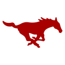

Heisman odds
Who is likely to win the Heisman Trophy, and who is likely to be in New York. A model's guess, built to be checked: below the table is how it has done on every season since 2013.
Updated Oct 8, through Week 6. Ballots are due Dec 7, when the finalists are announced; the winner is named Dec 12. Championship games count; bowls and the playoff do not.
| # | Player | Win | Wk | Finalist | So far | Proj. yds | Market | What has to happen |
|---|---|---|---|---|---|---|---|---|
| 1 | QB · Alabama · #1, 5–0 |
23% | ▼0.1 | 57% | 1,414 pass yds, 11 TD · 184 rush, 4 TD | 3,450 | +750 | 28% if Alabama finishes top 4 (80% likely) · 6.9% if not |
| 2 | WR/TE · Ohio State · #3, 4–1 |
18% | ▼0.2 | 68% | 823 rec yds, 9 TD | 1,680 | +115 | 27% if Ohio State finishes top 4 (51% likely) · 8.3% if not |
| 3 | QB · Ohio State · #3, 4–1 |
12% | ▼0.3 | 34% | 1,530 pass yds, 13 TD · 6 rush, 2 TD | 3,340 | – | 17% if Ohio State finishes top 4 (51% likely) · 6.0% if not |
| 4 | Darian Mensah
QB · Miami (FL) · #6, 5–0 |
11% | ▲0.2 | 33% | 1,438 pass yds, 15 TD · 79 rush, 2 TD | 3,370 | +460 | 17% if Miami (FL) finishes top 4 (26% likely) · 9.2% if not |
| 5 | Trinidad Chambliss
QB · Ole Miss · #16, 3–1 |
3.6% | – | 12% | 1,222 pass yds, 8 TD · 108 rush, 4 TD | 3,360 | +1600 | 22% if Ole Miss finishes top 4 (1.4% likely) · 3.3% if not |
| 6 | Malachi Toney
WR/TE · Miami (FL) · #6, 5–0 |
3.4% | – | 15% | 604 rec yds, 6 TD | 1,330 | – | 6.3% if Miami (FL) finishes top 4 (26% likely) · 2.4% if not |
| 7 | Kamario Taylor
QB · Mississippi State · #24, 4–1 |
3.1% | ▲0.1 | 12% | 1,450 pass yds, 17 TD · 159 rush, 1 TD | 3,340 | – | 17% if Mississippi State finishes top 4 (0.5% likely) · 3.0% if not |
| 8 | QB · LSU · #8, 4–1 |
2.5% | – | 7.4% | 1,220 pass yds, 8 TD · 220 rush, 6 TD | 3,050 | – | 11% if LSU finishes top 4 (8.6% likely) · 1.7% if not |
| 9 |  Kevin JenningsQB · SMU · #38, 4–1 |
2.4% | ▲0.1 | 9.4% | 1,613 pass yds, 14 TD · 69 rush, 2 TD | 3,530 | – | – |
| 10 | Wayshawn Parker
RB · Utah · #10, 4–0 |
1.7% | – | 8.2% | 328 rush yds, 5 TD · 154 rec | 1,240 | – | 5.0% if Utah finishes top 4 (9.2% likely) · 1.3% if not |
| 11 | QB · Notre Dame · #4, 5–0 |
1.6% | – | 5.1% | 1,197 pass yds, 13 TD · 28 rush, 3 TD | 2,620 | +800 | 2.4% if Notre Dame finishes top 4 (36% likely) · 1.1% if not |
| 12 | Giovanni Lopez
QB · Wake Forest · #44, 4–1 |
1.3% | – | 3.5% | 1,377 pass yds, 10 TD · 193 rush, 5 TD | 3,300 | – | – |
| 13 | QB · USC · #13, 5–1 |
1.3% | ▼0.1 | 3.3% | 1,744 pass yds, 15 TD · -4 rush, 2 TD | 3,110 | – | 14% if USC finishes top 4 (1.6% likely) · 1.1% if not |
| 14 | RB · UCLA · #19, 4–0 |
1.2% | – | 4.7% | 445 rush yds, 9 TD · 88 rec | 1,320 | – | 10.0% if UCLA finishes top 4 (2.6% likely) · 0.9% if not |
| 15 | Mason Heintschel
QB · Pittsburgh · #35, 5–0 |
1.1% | – | 2.7% | 1,304 pass yds, 14 TD · 112 rush, 1 TD | 3,040 | – | – |
| Everyone else | 13% | |||||||
Where the chance sits, by position: QB 68%, WR/TE 24%, RB 7.2%. 65 candidates were scored across 10,000 simulated seasons.
The Hidden Heisman · Week 5
The biggest game this week from outside the power conferencesJackson Arnold
UNLV · Mountain West · W 39–31 vs California (MRI #70)
- Top 0.61% of every FBS player-game since 2012 — #860 of 140,947
- Not among the top 15 in the Heisman odds that week. A game like this is how a name gets onto the list.
Market is what a sportsbook was paying on Oct 4 (DraftKings Sportsbook, as reported by Sports Illustrated going into Week 6). Only the players the article quotes. American odds; the implied chance includes the sportsbook's margin, so it runs high. It is here as a benchmark, to show where the model and the betting market disagree; it is not used to make a single number above.
Who reaches New York
The Trust invites three to five players to the ceremony, usually four. This is each candidate's chance of finishing in the top four of the voting, most likely first. Added up, the chances come to about 3.2 offensive finalists. These chances were rescaled after the backtest showed the raw ones running high for everyone but the favorites (a candidate given 9% reached New York about 5% of the time); on held-out seasons that trimmed the error a little, from 0.0322 to 0.0320.
| Player | Finalist | Win |
|---|---|---|
| 68% | 18% | |
| 57% | 23% | |
| 34% | 12% | |
| Darian Mensah QB · Miami (FL) | 33% | 11% |
| Malachi Toney WR/TE · Miami (FL) | 15% | 3.4% |
| Trinidad Chambliss QB · Ole Miss | 12% | 3.6% |
| Kamario Taylor QB · Mississippi State | 12% | 3.1% |
| Kevin Jennings QB · SMU | 9.4% | 2.4% |
Not in this table: defenders. A player who was mainly a defender has been invited to New York in 4 of the last 14 seasons (2012, 2016, 2019, 2021), so a share of the four places usually goes to someone the model does not score. The leading defensive players on top-ranked teams right now, by tackles, sacks and takeaways: Elijah Melendez (Auburn), Tony Rojas (Penn State), Princewill Umanmielen (LSU).
The Hidden Heisman this season
| Wk | Player | Opponent | Line | Rarity |
|---|---|---|---|---|
| 5 | Jackson Arnold UNLV | vs California | 177 pass, 3 TD · 110 rush, 2 TD | top 0.61% |
| 4 | Jahiem White North Texas | vs Houston Christian | 133 rush, 4 TD | top 1.03% |
| 3 | Braden Atkinson Oregon State | vs Montana | 333 pass, 5 TD · 4 rush, 1 TD | top 0.91% |
| 2 | Jesse Legree Oregon State | vs Texas Tech | 240 rece, 2 TD | top 1.64% |
| 1 | Jaylin Carter Memphis | vs Arkansas State | 183 rush, 4 TD | top 0.44% |
One a week, from the Group of Five and the independents (not Notre Dame), leaving out anyone the Heisman odds already give more than 5%. The game is scored on yards and touchdowns — passing yards count a little less, since there are more of them — and scaled by how good the opponent was going in: up to 30% more against a top team, as much as 15% less against a weak one or an FCS side. Decided once each week is final, and never revised. When the regular season is over, the season award goes to the player with the most of those points across all his games, under the same rules.
How it works
The rest of the season is played out 10,000 times with the same engine as the season simulation, so a team that loses twice in November is a different argument from one that goes unbeaten, and each simulated season knows which it is. Each candidate's finished stat line is projected from what he has done and how many games his team has left, using what actually happened to candidates at this point of every past season (hot starts cool, and some players get hurt). Then a model that weighs what voters have rewarded — how much he produced compared with the rest of the field, how he compares within his position, and how good his team is — picks a winner in each simulated season. The chances are how often each player won.
What it cannot see. Defenders are not candidates: nobody who was mainly a defender has won since 1997, but a great one will still take votes, and those sit in “everyone else.” A player who does something remarkable on both sides of the ball, or in one famous game, is worth more to a voter than a stat line says (Travis Hunter in 2024 is the case the model missed worst). A player's output and his team's results are simulated separately, though in life they move together. And it knows nothing of injuries that have not happened yet, except in the proportions they have happened before.
How it has done
Two tests, both on past seasons, both leaving the season being predicted out of everything the model learned. Given a finished regular season, it names the winner first 64% of the time and has him in its top three 86% of the time, across 14 seasons (2012–2025). Picking the most productive player on a top-five team manages 50%.
Standing partway through a season is this page's real job. At each of six points in each season from 2013 to 2025, it saw only what was known then, simulated the rest, and ranked the field. The last two columns are the same model applied to the standings as they stood, with no simulated season and no projection.
| Through week | Winner in its top 3 | standings only | Winner first | standings only |
|---|---|---|---|---|
| 3 | 60% | 10% | 30% | 10% |
| 5 | 73% | 36% | 27% | 18% |
| 7 | 58% | 42% | 17% | 8% |
| 9 | 77% | 54% | 31% | 31% |
| 11 | 69% | 62% | 38% | 31% |
| 13 | 85% | 77% | 62% | 54% |
Thirteen seasons is a small sample: each season moves a rate by about eight points, so read the pattern, not any one week. Where it says a candidate has a 20–30% chance, candidates like that have won about that often; the very small chances run a little high.
What was tried and did not help
Each of these was tested the same way as everything else, and the plain version won or tied. Lower log loss is better; the first two columns are the average over the six weeks and over weeks 3 and 5.
| Way of projecting | Log loss | Weeks 3–5 | Winner in top 3 |
|---|---|---|---|
| original | 2.274 | 2.534 | 70% |
| team link | 2.278 | 2.516 | 67% |
| last season (weight .5, 2 games) | 2.295 | 2.586 | 66% |
| last season (weight .7, 4 games) | 2.338 | 2.696 | 67% |
| last season (weight .5) + link | 2.296 | 2.569 | 67% |
| last season (weight .7, 4 games) + link | 2.332 | 2.667 | 66% |
"Team link" makes a player's finish move with his team's simulated results (they are correlated about 0.20 in the history). "Last season" pulls a player's early-season rate toward what he did last year instead of toward the average for his position.
- + late-season production (weeks 10-13): log loss 1.70, against 1.64 without it.
- + production against top-25 opponents: log loss 1.75, against 1.64 without it.
Every winner, and where the model had him
| Year | Winner | Week 3 | Week 7 | Week 11 | Week 13 |
|---|---|---|---|---|---|
| 2025 | Fernando Mendoza | #11 (3.4%) | #4 (8.9%) | #6 (5.3%) | #5 (7.5%) |
| 2024 | Travis Hunter | – | – | #21 (0.2%) | #17 (0.2%) |
| 2023 | Jayden Daniels | #4 (5.7%) | #3 (10%) | #2 (15%) | #1 (35%) |
| 2022 | Caleb Williams | #15 (1.3%) | #19 (1.4%) | #9 (3.1%) | #1 (16%) |
| 2021 | Bryce Young | #1 (12%) | #1 (14%) | #2 (17%) | #1 (27%) |
| 2020 | DeVonta Smith | – | #8 (3.1%) | #3 (13%) | #1 (32%) |
| 2019 | Joe Burrow | #3 (7.7%) | #3 (13%) | #1 (44%) | #1 (42%) |
| 2018 | Kyler Murray | #1 (14%) | #2 (24%) | #1 (46%) | #1 (60%) |
| 2017 | Baker Mayfield | #2 (12%) | #5 (5.1%) | #1 (48%) | #1 (51%) |
| 2016 | Lamar Jackson | #1 (27%) | #1 (38%) | #1 (68%) | #2 (28%) |
| 2015 | Derrick Henry | #6 (2.9%) | #11 (2.5%) | #4 (18%) | #3 (17%) |
| 2014 | Marcus Mariota | #2 (11%) | #2 (11%) | #1 (37%) | #1 (66%) |
| 2013 | Jameis Winston | – | #2 (10%) | #3 (13%) | #3 (11%) |
Rank among about 65 candidates, and the chance it gave him. A dash means he was not among them yet.